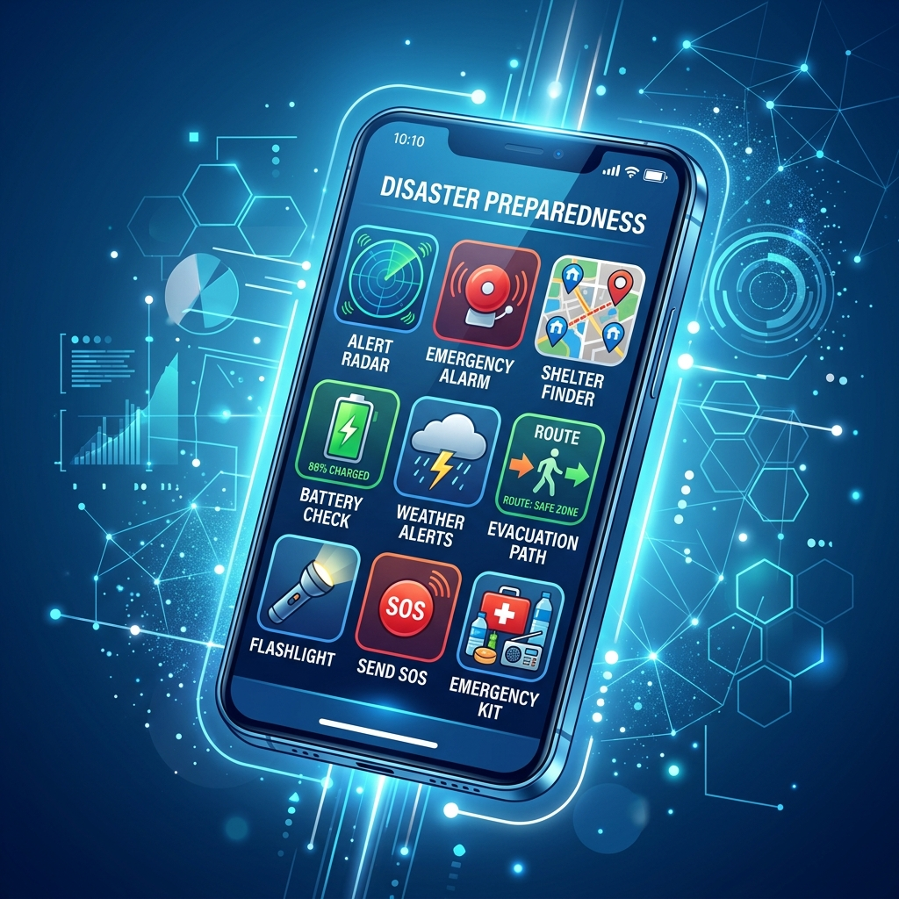

【電波が切れても使える】スマホを命綱にする『デジタル備蓄』と本当に必要な神アプリ

こんにちは、防災オプチャの管理人です！
皆さんは普段、スマホの充電ってどれくらい気にしてますか？「10%切ったら焦る」くらいでしょうか。
災害が起きた時、スマホは懐中電灯にも、避難場所を探す地図にも、家族の安否を確認する連絡ツールにもなる「超・最強の防災グッズ」です。でも、もし基地局が倒れたり停電になってネット（電波）が完全に繋がらなくなったらどうしますか？
「アプリを開いても真っ白で何も見えない」「ただの重い文チンになった…」なんて最悪の事態を防ぐために、今すぐやってほしいのがスマホの「デジタル備蓄」です。今回は、ネットが繋がらなくても役に立つ、本当に使える神アプリと事前設定をぶっちゃけて紹介します！
鉄則①：Googleマップを『オフライン保存』せよ！
災害時に一番使うのが地図アプリですが、普段使っているオンライン地図はネットが切れたら一歩も動かなくなります。見知らぬ土地や、夜間の暗闇の中で道に迷うのは本当に恐ろしいことです。
今すぐやってほしいのが、Googleマップの「オフラインマップ」ダウンロードです。
🗺️ Googleマップのオフラインダウンロード手順
- Googleマップアプリを開く。
- 右上の自分のアイコンをタップし、「オフライン マップ」を選ぶ。
- 「自分の地図を選択」をタップし、自宅の周辺や通勤・通学ルートが入るように四角い枠を合わせる。
- 「ダウンロード」ボタンを押す。（Wi-Fi環境でやってね！）
これだけで、たとえスマホが「圏外」になっても、スマホ内蔵のGPS機能を使って、自分の現在地と周辺の細かい道路、避難所の場所までばっちり確認できます。今この画面を閉じたらすぐに設定してください！これマジで命を救います。
鉄則②：命を分ける「防災速報アプリ」は2強でいく
スマホに入れておくべき総合防災アプリ、多すぎてどれがいいか分からないですよね。私のオプチャでも検証した結果、結論として以下の2つだけ入れておけば完璧です。
① Yahoo!防災速報
迷ったらこれ。なんと言っても「最大3つの登録地域」の速報を受け取れるのが最高です。現在地だけでなく、「遠くに暮らす高齢の両親の家」や「子供の学校がある場所」を登録しておけば、そこに大雨警報や地震があったときにリアルタイムで通知が来ます。「お父さん大丈夫？」とすぐに連絡が取れるので家族持ちには必須です。
② 特務機関NERV防災
ネットギークたちの間では「最強」と名高い防災アプリです。気象庁の生データを直結で処理しているので、地震発生時の速報がどこよりもとにかく速い。そして、文字のフォントや色のコントラストが計算し尽くされていて、パニック状態で画面がパッと目に入った瞬間に状況を理解できる「デザインの美しさ」が素晴らしいです。
鉄則③：家族との安否確認は『位置情報アプリ』で
大災害の直後は、電話回線が一瞬でパンクして全く繋がらなくなります。でも、ネットのデータ通信（パケット）は比較的繋がりやすいです。
普段から「Life360」や「コゼニ」といったファミリー位置情報アプリを家族で共有しておきましょう。「地震が起きたとき、子供はちゃんと避難所にいるか？」「夫はまだ会社にいるか？」が、テキストのやり取りをしなくても、地図上のアイコンで一目でわかります。連絡がつかないことによる「どうしよう…」という不安を大きく減らしてくれます。
どんなに優秀な防災アプリを揃えても、スマホの充電が切れたら終了です。特にGPSを使う防災アプリは驚くほど電池を食います。
普段から、「10000mAh以上（スマホを約2〜3回満充電できる容量）」のモバイルバッテリーをケーブルと一緒にカバンに入れっぱなしにしておく習慣をつけましょう。寝室の枕元にも、予備のバッテリーを置いておくと夜間の停電でも安心です。
まとめ：『今』設定することに意味がある
この記事を読んで「なるほどなぁ」と思っても、実際に地震が来て電波が消えてからでは、アプリのダウンロードも設定もできません。
「明日やろう」ではなく、今この場でGoogleマップのダウンロードボタンをポチッと押してみてください。その10秒の行動が、いざという時にあなた自身と大切な家族を守る最大の備えになります。私たちのオプチャでも、定期的にこの『デジタル避難訓練』をやってますので、興味があればぜひ参加してくださいね！